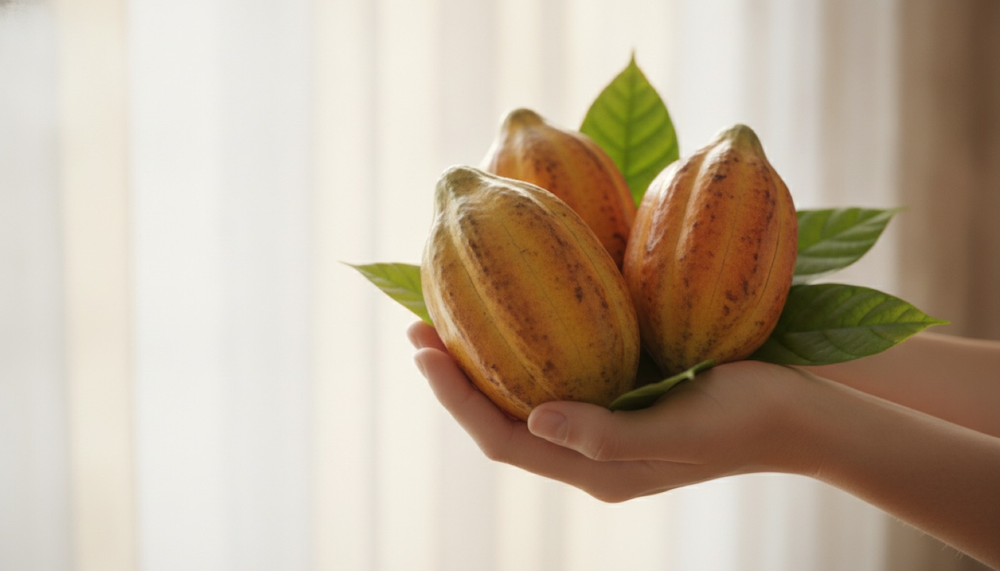
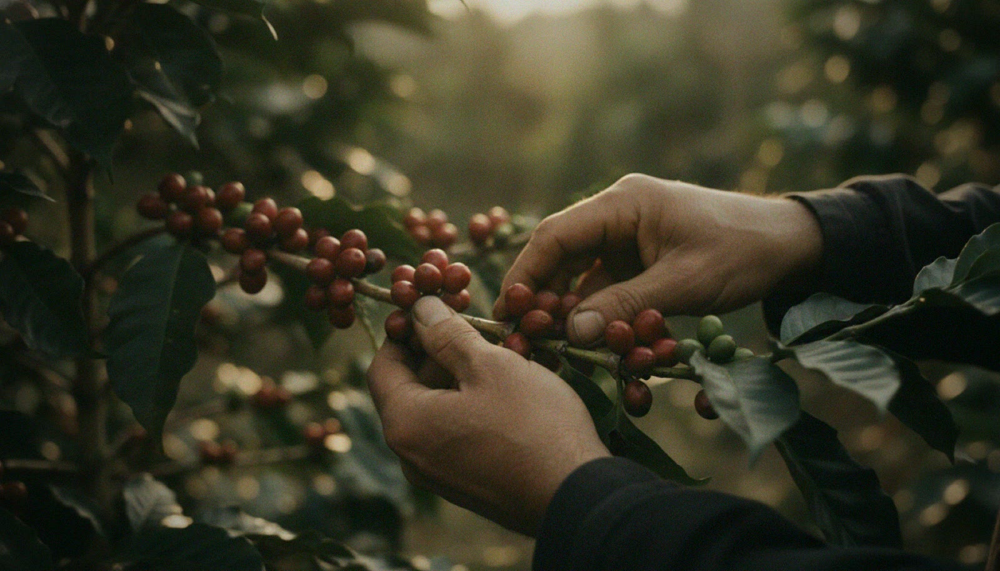
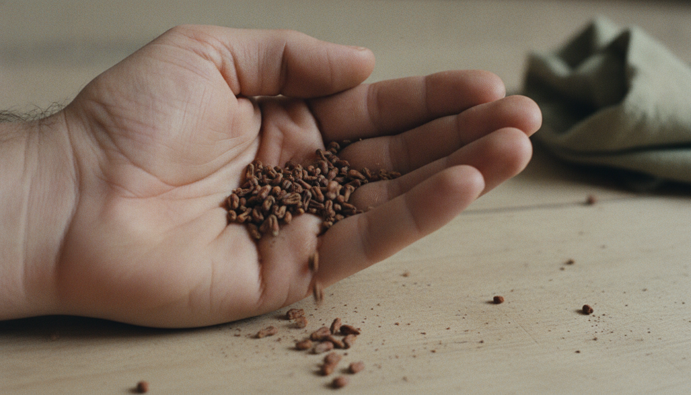
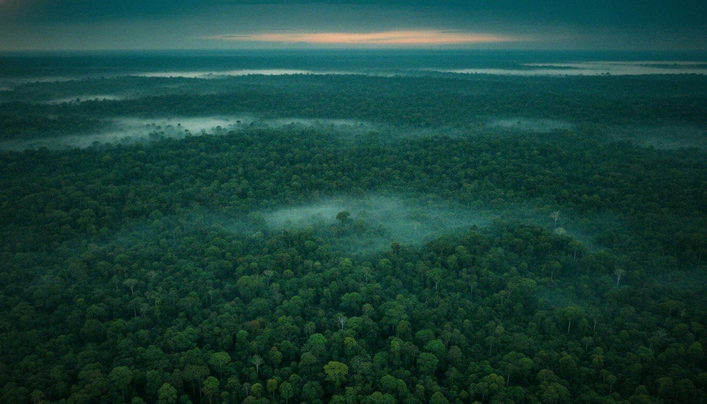

Food ingredient supplier
A backbone for the world's most fragile commodities.
One technology platform. A growing portfolio of ingredient alternatives for the crops climate change puts at risk.
Why now
The world's most loved ingredients grow in fewer places, under more pressure.
Climate
Suitable growing regions are shrinking as temperatures rise and rainfall shifts.
Volatility
Price shocks will return. Supply independence lasts.
Regulation
EUDR is mandatory. Scope 3 targets are due.
Technology
One platform.
Built in layers.
A scalable fermentation platform turns locally available raw materials into ingredients that perform like the originals.
Portfolio
One platform. A growing portfolio.

In marketCocoa alternatives
Cocoa-free solutions, available as powder alternatives.

In developmentCoffee alternatives
Coffee taste and function, from resilient local raw materials.

In marketCocoa-free chocolate alternatives
Also available in fluid form.

NextFurther fragile commodities
Vanilla, citrus, meat and more.
Scale
Industrial scale, today.
Impact
−73.6 %
CO₂e, verified by Mondra*
ChoViva CO₂ footprint*Cocoa-free chocolate alternative, milk recipe, compared with conventional milk chocolate (37% cocoa).
Scope 3
Reporting-ready data for our customers' climate targets.
EUDR
Deforestation-free by design.
Company